| |
Westcoaster Review
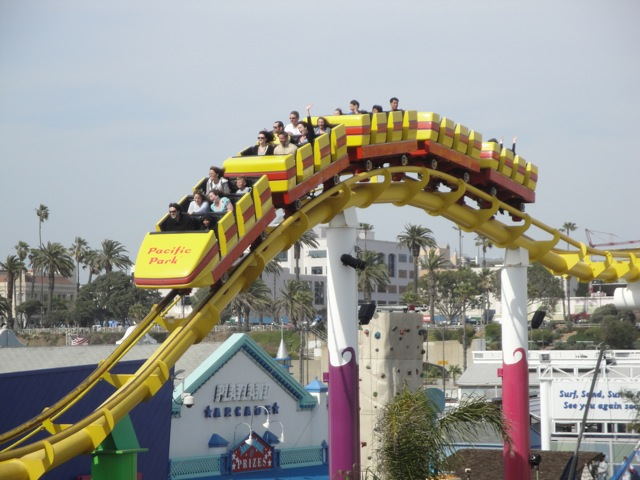
Once you get in the seat, the ride operator pulls down your lap bar and away you go. you climb up the lifthill. The view from the lifthill is nice. Then you crest the lifthill and go into the dip. After you pull out of the dip, you start to go into a helix. The helix for the most part is pretty boring. However, it does provide you with a good view of the pier and the Pacific Ocean. However, once we're done with the helix, we go into the first drop. The first drop is fun and not bad. It's kind of fun in a mine train kind of way. Then you go into a bunny hop. This is definetly the best part of the ride as this part of the ride has AIRTIME!!! While it's not super strong airtime, it is enough airtime to wake you up if you fell asleep during the first helix. After that fun bit with the airtime, we head into another helix. While this is no prize winning helix of death, it is alot better than the first helix we went through as not only do we have some speed from the drop and bunny hop, but it is also a downward helix so you gain some speed. During this helix, you get a good view of Pacific Plunge, the Scrambler, the Ferris Wheel, and the Pacific Ocean. At this point, you have some good speed, but then we rise up and head back to the station. But you do get a nice little treat. You get a second ride. While I wouldn't consider Westcoaster as a great amazing coaster, I do have to admit it looks cool and is a unique ride. I'd definetly recommend riding it if you're at the Santa Monica Pier.
5/10
Location: Santa Monica Pier
Opened: 1996
Built by: Morgan
Last Ridden:
April 2, 2010
Westcoaster Photos

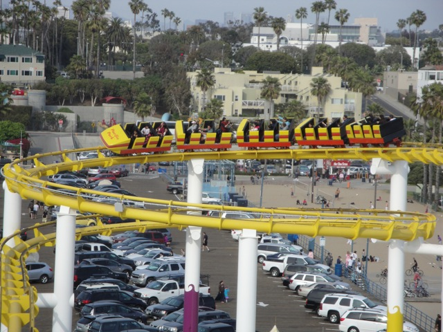
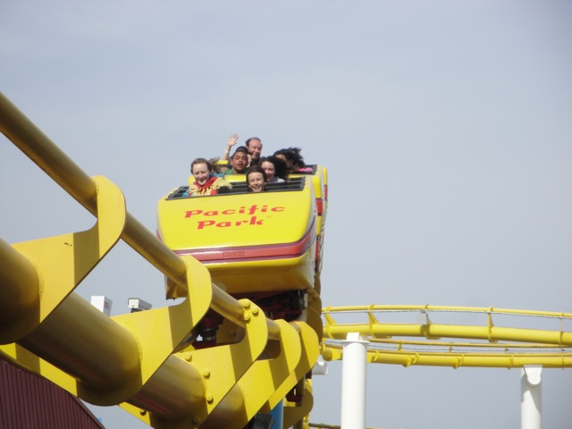


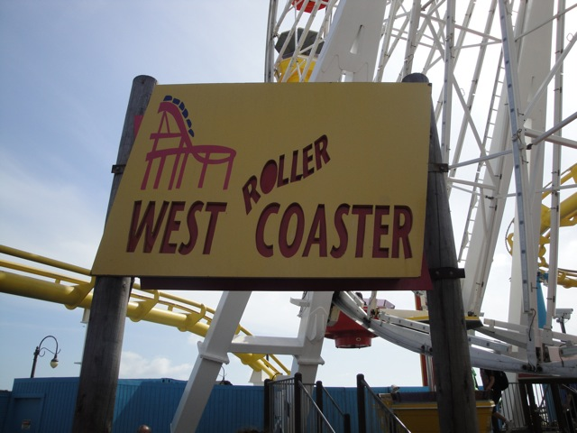
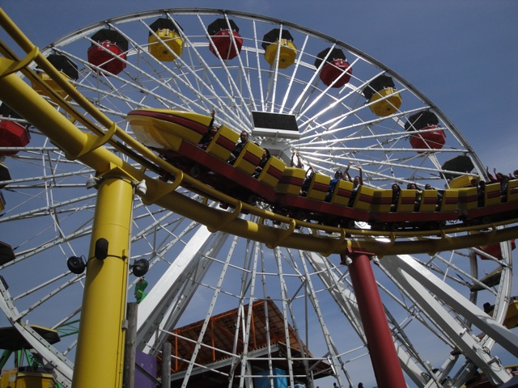

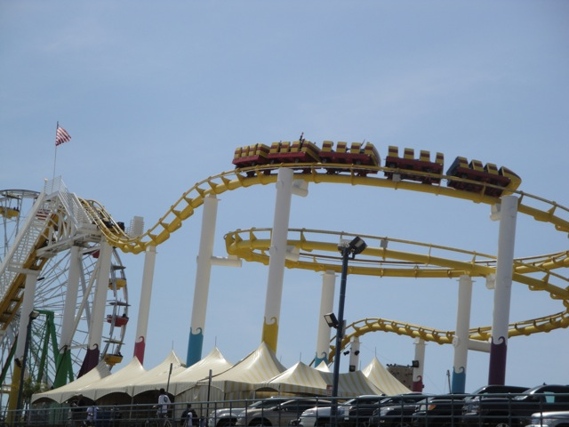


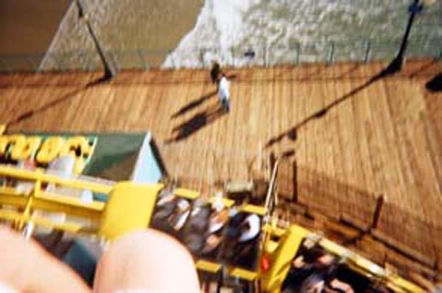
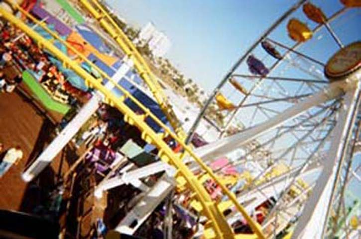
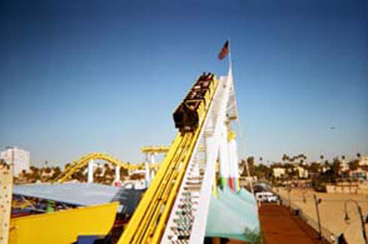
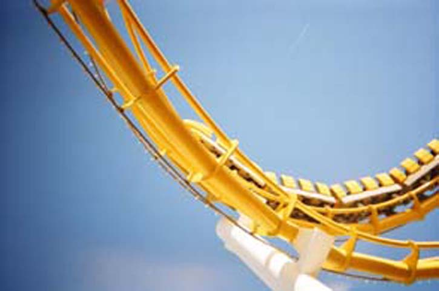

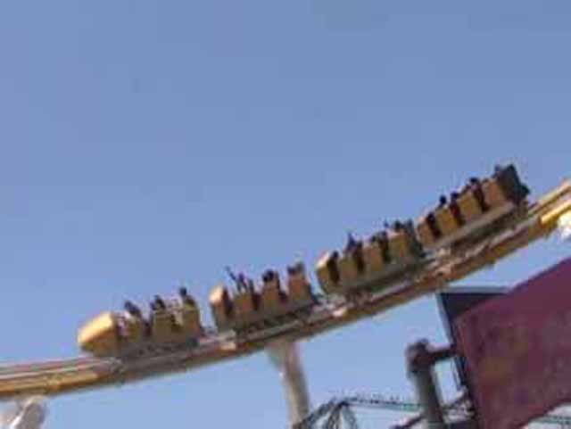
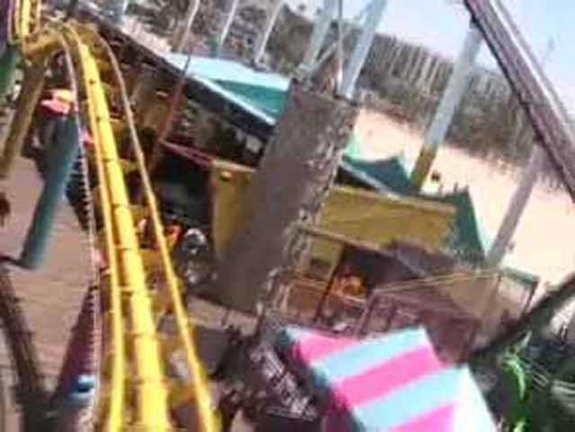


|